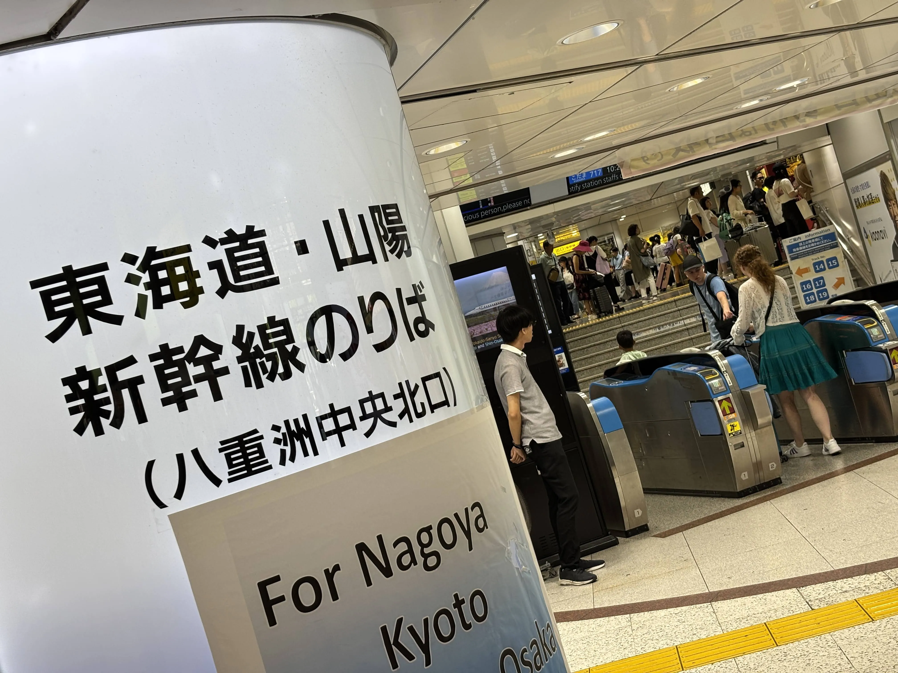
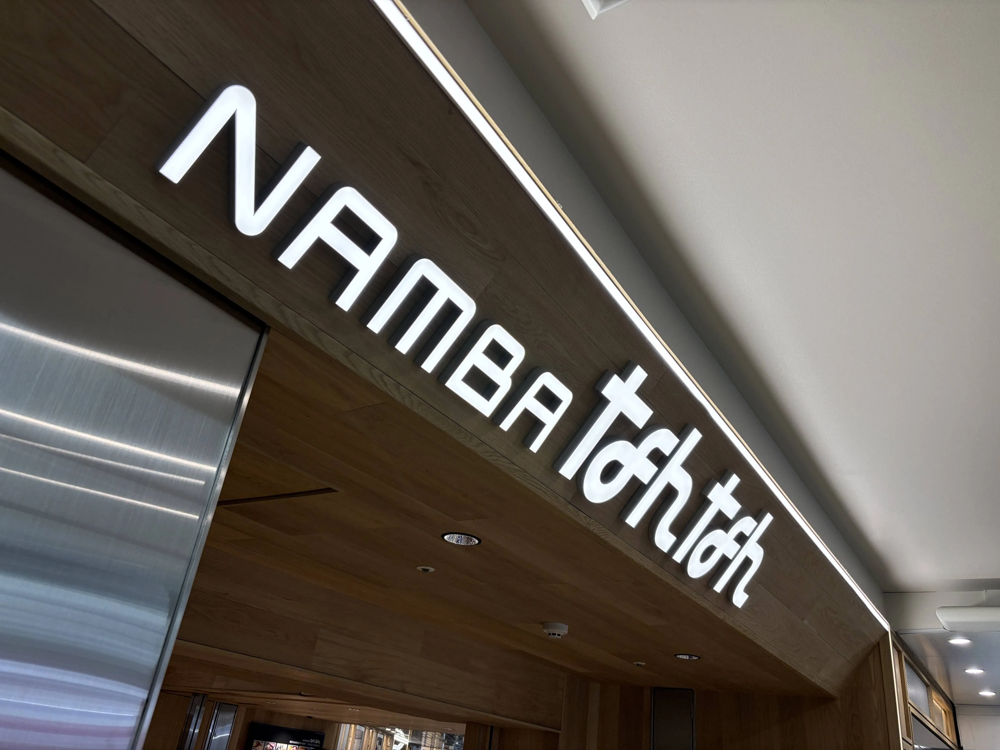

ラブライブ！スーパースター!! Liella! First Generation LoveLive! Wonderful Starlines 大阪公演 / ひよこニキのホームページ
ラブライブ！スーパースター!! Liella! First Generation LoveLive! Wonderful Starlines 大阪公演に参加しました。
まさか2ヶ月連続で大阪へ向かう事になるとは…苦笑
今回も東京駅からスタート。
同時期に東京駅一番街のコラボも行っていた為、見る事に。
推しですね。
希実…のぞみ広場だよ。
全体はこんな感じ。
という事で…。
？「ｼｬｰｲｸｿﾞ-!!ﾀｲｶﾞｰ!!ﾌｧｲﾔｰ!!ｻｲﾊﾞｰ!!ﾌｧｲﾊﾞｰ!!ﾀﾞｲﾊﾞｰ!!ﾊﾞｲﾊﾞｰ!!ｼﾞｬｰｼﾞｬｰ!!!」
希実…のぞみだよ。
希実…のぞみだよ…。
希実…のぞみだよ…のぞみ。
かのん…グリーン車だよ…。
先月もこんな感じだった様な…苦笑
新大阪駅着。
今回は宿を難波駅近辺で抑えたので荷物を預けて会場最寄駅へ。

会場着。猛暑で30秒日向に出ているだけで大汗。
何やらフラッグの展示がある模様。
1日目はスタンド席。
ステージ正面の席で尚且つ結構前の方だったので見やすくはありました。しかも通路側。
当時はまだラブライブ！というコンテンツ自体をまともにしらなかったので、追体験出来ました、遂に。
因みにですがトロッコに乗って来たペイトン尚未さんに何故かハートのレスを貰いました。感謝。
でもやはり最推しの伊達さゆりさんにレスを貰うのは難しいんだなあとも実感しました。
セットリストの方はある程度予想は出来ていましたが、やはり楽しかったですね。
アンコール前の曲では「Dream Rainbow」が良かったですね。
「空に指先で弧を描くのさ浮びあがるよ Dream Rainbow」という歌詞からの「君に出会えた」という所が本当に好きで好きで。
伊達さゆりさんもMCで言及していましたが、この「君」というのが「今日はどんな子に送ろうかな。かのんちゃんに送ろうかな。」と色々と想像出来る歌詞が本当に良いなと思いました。
そして「ユニゾン」ですよ。
僕は3rdで1度きり、しかも9人の「ユニゾン」しか聞いていなかったので感動しました。良かったです。
そしてアンコール。まず述べたいのですが曲数が多い！そして曲選が良い！
まずアンコール1曲目「Shooting Voice!!」
アンコール1曲目でやるとは…分かってるなあ…！と思いました。因みにバリバリコール曲になりました。
そして！そしてそして！
「青空を待ってる」
ショートバージョンでしたが本当に良かったです。僕はやはり推しが好きなんだなあと再実感しました。
「Dancing Heart La-Pa-Pa-Pa!」も結構体力を使って楽しかったですね。
「What a Wonderful Dream!!」も2番サビ後にバリバリコールを入れる形になっていました。楽しい。
最後の曲は「この街でいまキミと」。今回のライブに相応しい曲だなあと感じました。
終演後なのですが、連番ヲタクと会場で流れている曲に合わせて歌っていた所、後ろのヲタクが反応してくれて10人ぐらいで大合唱してきました…苦笑（勿論ある程度配慮はしていますが…！）
そしてある程度人が退場して、スピーカーから「START!! True dreams」が流れて…
？「言いたいことがあるんだよ…！◎△＄♪×￥●＆％＃？！」
となりました。これが地味に楽しかったです。
ヲタクと別れて宿へ向かっている電車の中で思ったのですが「探して！Future」ってドコに行ったんですかね、と。凄い満足してるので問題無いのですが…笑
宿ですが、今回はカプセルホテルにしてみました。というのも昨今の宿代高騰には流石に抗えないという事で…苦笑
お値段割引使いまくって1泊2,750円。大浴場ありで、基本宿泊している人も1人なのでかなり静か。寝られないという事も無かったので今度からカプセルホテルで良いかなと思いました。
2日目。
なんだか聞いた事のある単語の地下通路よりスタート。
希実…お盆期間は全席指定席だよ…。（？）
会場着。
流石に暑かったのでヲタクと喫茶店に。
肝心のライブの方の感想へ。
座席はアリーナ。大阪城ホールでは初めて。というか久々にアリーナに降りる事が出来ました。ヨカッタ。
流石に初日程の感動は得られませんでしたが、十分楽しかったですよ。というか感想が1日目と殆ど同じになってしまうので割愛とさせていただきたい…。
因みにですがトロッコに乗って来たペイトン尚未さんに何故かハートのレスを貰うという所まで同じでした。本当に何故…？笑
セットリストとして違う点は「Dancing Heart La-Pa-Pa-Pa!」がソロ1曲に変わっているという点ですね。
「水色のSunday」のコール、楽しかったです。
終演して会場を出ると夕焼け。アクリルスタンド。
この時期のライブは良いという事を実感出来ました。
ヲタクとああでもないこうでもないと言い合いながら新大阪駅へ。
とあるヲタクを見送った後いつもの。
希実…のぞみだよ…。
希実…のぞみだよ…のぞみ…。
さゆり…グリーン車だよ…お酒だよ…。
という事で帰路に就く。
今回のライブは1日目の方が楽しかったかなあ、両日楽しかったけれども。
Liella!1期生に声が届けられて良かったです。
非常に楽しかった2日間でした。
HiyokoNiki All Rights Reserved.